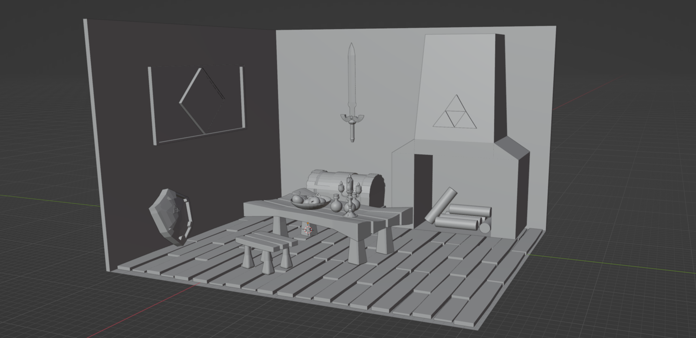

Coding and Digital Innovation : Mon blog Wordpress
Notre premier devoir de coding fut de mettre en place un blog Wordpress.
Cela nous a tout d'abord permis de réaliser l'importance de la mise en page d'un site et comment l'organiser afin de le rendre le plus captivant possible. De plus, cela nous a fait nous pencher sur les différents outils et fonctions trouvables dans le langage HTML et CSS, et commencer à savoir distinguer les deux.
Marketing & Communication : Etude du plan marketing de Sprite
Pour cet axe, notre premier devoir fut de choisir une marque
puis la présenter de manière détaillée (biographie et 4P), avant d'expliquer son plan marketing via étude des concurrents, de la segmentation, du ciblage et du SWOT.

Modélisation 3D : Création d'une salle et d'éléments style Zelda + Lumière
Nous avions ici pour devoir de dresser une scène : divers éléments tels qu'une table, un tabouret, des fondations ou encore une épée étaient à réaliser en autonomie.
Nous avons poursuivi en cours avec la modélisation d'un coffre, d'un bouclier et du célèbre personnage Lumière issu du conte de fées "La Belle et la Bête". Le reste de la scène était à décorer à notre guise.
Animation 3D et Jeu-vidéo : Game design d'un plateformer
Pour ce module, notre premier travail était de trouver une idée de jeu (pas si évident croyez-moi) dont nous constituerions la démo de A à Z pour notre projet de fin d'année.
Tous genres étaient autorisés tant qu'ils permettaient l'élaboration d'un plateformer en 2D.
J'ai pour ma part opté pour "We Hunt Demons", un jeu d'action/horreur comptant un système relationnel à impact sur le gameplay et la narration.
Création & Design : Réalisation d'une album cover avec Photoshopcard
En Création & Design, nous avions comme premier devoir de créer une album cover d'un artiste que nous avions choisi en début d'année.
Ayant choisi Amy Winehouse, j'avais pour consigne spécifique de créer un "legacy album"
soit une compilation de ses meilleures chansons. Afin de mettre en valeur cette spécificité, j'ai élaboré une couverture hors du style simple autrefois utilisé par Amy, et ai crée une pochette en noir et blanc en référence à Back to Black, LA chanson (et l'album) emblématique de Winehouse.